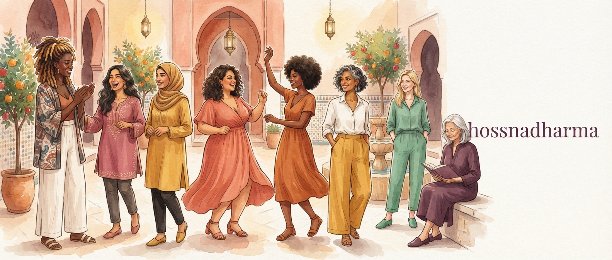

Parfois, le corps sait déjà. Il se contracte, s'agite, ralentit, résiste ou demande de l'espace. Il n'y a pas toujours besoin de commencer par expliquer.
Danse thérapie · mouvement
Quand le corps a quelque chose à dire avant les mots.
Le geste, le souffle, le rythme et la création peuvent devenir des voies d'accès au corps aussi directes que la parole.

Bouger pour sentir. Sentir pour écouter.